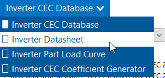
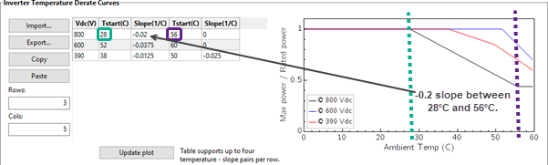
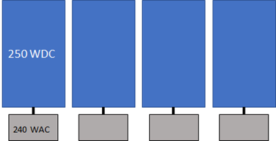

The Inverter page allows you to choose an inverter performance model and either choose an inverter from a list, or enter inverter parameters from a manufacturer's data sheet using either a weighted efficiency or a table of part-load efficiency values.
SAM can only model a photovoltaic system with a single type of inverter. Specify the number of inverters in the system on the System Design page.
SAM displays the name of the active inverter model at the top of the Inverter page. Click the model name to choose a different model:

You can choose from three different inverter performance models:
•Inverter CEC Database calculates the system's AC output using parameters from SAM's CEC database of inverter parameters with the Sandia inverter model. To use this model, you simply choose an inverter from the list. Use this model for most analyses.
•Inverter Datasheet allows you to specify the inverter's parameters using values from a manufacturer's data sheet, and calculates coefficients for the Sandia inverter model from the parameters you provide. Use this model for an inverter that is not in the CEC database.
•Inverter Part Load Curve allows you to specify a table of part-load efficiency values for an inverter using data from a manufacturer's data sheet or other source. Use this model when you have the inverter's part-load efficiency data.
•Inverter CEC Coefficient Generator generates coefficients for the Sandia inverter model when you have inverter test data.
Each of the three inverter models calculates a DC to AC conversion efficiency, assuming that the DC power input to the inverter is equal to the DC output of the photovoltaic array. SAM uses the inverter operating ranges parameters to either size the system or display sizing suggestion messages on the System Design page.
The inverter model reports several hourly sim ulation results on the Results page that you can use to understand how SAM models the inverter or to troubleshoot your analyses:
For a complete technical description of SAM's photovoltaic model, see Gilman, P.; Dobos, A.; DiOrio, N.; Freeman, J.; Janzou, S.; Ryberg, D. (2018) SAM Photovoltaic Model Technical Reference Update. 93 pp.; NREL/TP-6A20-67399 available along with other technical documentation from the SAM website.
Inverter Clipping Loss
SAM models two types of inverter clipping loss.
•Power limiting losses occur in time steps when the inverter's AC power output exceeds the total inverter nameplate AC capacity. During those time steps, SAM adjusts the inverter output to the inverter nameplate capacity (it does not adjust the inverter's input voltage).
•MPPT voltage limit losses occur in time steps when the Array's DC voltage falls outside the rated inverter minimum and maximum MPPT voltage limits on the System Design page. In those time steps, SAM adjusts the array DC voltage to the inverter's maximum or minimum MPPT voltage limit as appropriate.
You can see inverter clipping losses in the results and in the loss diagram.
Notes.
The inverter MPPT voltage limits are specified on the System Design page.
SAM uses the inverter maximum DC voltage rating to display a simulation message when the operating voltage is greater than the maximum rating. (This should never happen if the maximum voltage rating is greater than or equal to the maximum MPPT voltage rating.)
SAM cannot model MPPT voltage limit losses with the Sandia or Simple Efficiency module models because those models assume that the module operates at its maximum power point, and do not allow the module's operating voltage to be changed from the maximum power point.
You can run the System Sizing macro to generate a detailed report about clipping losses and the inverter's MPPT performance.
Inverter Temperature Derate Curves
SAM adjusts the inverter efficiency based on the ambient temperature in the weather file based on the Efficiency - Ambient Temperature curve under Inverter Temperature Derate Curves. The default curve decreases the inverter efficiency as the ambient temperature increases above 52.8 degrees Celsius at a rate of 0.021% per degree of temperature increases. You can edit the values in the efficiency table to change the shape of the curve.
Multiple MPPT Inputs
SAM can model up to four maximum power point tracking (MPPT) inputs, but only for a system with a single inverter.
Note. The Number of MPPT inputs is disabled for systems with more than one inverter.
Number of MPPT inputs
The number of MPPT inputs in the system. In the actual system, the MPPT hardware may be integrated with the inverter, or separate devices.
In order to model the operating voltage of each input separately, you should assign each MPPT input to a separate subarray on the System Design page.

The Inverter CEC Database model is an implementation of the Sandia Model for Grid-Connected PV Inverters (Sandia inverter model). It is an empirically-based performance model of inverter performance that uses parameters from a database of commercially available inverters maintained by the California Energy Commission (CEC). The Inverter CEC Database model consists of a set of equations that SAM uses to calculate the inverter's hourly AC output based on the DC input (equivalent to the electrical output of the photovoltaic array) and a set of empirically-determined coefficients that describe the inverter's performance characteristics. The coefficients for each inverter are empirically determined from data provided by the inverter's manufacturer and either field measurements from an inverter of the same type installed in an operating photovoltaic system, or laboratory measurements. Measured values are taken using the CEC inverter test protocol. The Sandia inverter model is described in the following documents: •King D et al (2007) Performance Model for Grid-Connected Photovoltaic Inverters, Sandia National Laboratories, SAND2007-5036 (PDF 1.3 MB) •On the PV Performance Modeling Collaborative website •Gilman, P. et al (2018). SAM Photovoltaic Model Technical Reference. National Renewable Energy Laboratory Update. 59 pp.; NREL/TP-6A20-67399. (Available on the SAM website.) The CEC inverter test protocol is described in: •Bower W et al (Draft 2004) Performance Test Protocol for Evaluating Inverters Used in Grid-Connected Photovoltaic Systems (PDF 584 KB) •PV Performance Modeling Collaborative website Notes. To use the Inverter CEC Database model: 1.On the Inverter page, choose Inverter CEC Database. 2.Choose an inverter from the list of available inverters. You can type a few letters of the manufacturer or inverter name in the Search box to filter the list. If you are modeling an inverter not included in the database and want to use the Sandia inverter model, you can use the Inverter Datasheet model with values from a manufacturer's data sheet. Each inverter listing shows the manufacturer name, model number and AC voltage rating, and information in brackets about the organization responsible for generating the test data and the year the data was generated. "CEC" indicates that test data was generated by the California Energy Commission. Efficiency Curve and CharacteristicsWhen you select an inverter from the list, SAM displays an efficiency curve and the inverter's parameters for your reference. The parameter values are from the Sandia inverter library, and are values that the Sandia inverter model uses as inputs. Note. SAM displays a few of the parameters from the CEC database on the Inverter page. If you want to see the complete set of parameters, you can do so in the library editor. Number of MPPT inputs The number of maximum power point tracking (MPPT) inputs in the system. In the actual system, the MPPT hardware may be integrated with the inverter, or separate devices. In order to model the operating voltage of each input separately, you should assign each MPPT input to a separate subarray on the System Design page. CEC weighted efficiency and European weighted efficiency, % SAM calculates and displays both the CEC weighted efficiency and European weighted efficiency for your reference. It does not use these efficiency values during a simulation. To calculate the efficiencies, SAM calculates the inverter's nominal efficiency at seven different power levels, and applies the set of weighting factors for the CEC and European methods of calculating the weighted efficiency. The following list briefly describes the each parameter that SAM displays on the Inverter page. You can read more about these and all of the other Sandia inverter model input parameters in the King 2004 reference cited above. The names in brackets are the names used in the King reference. Maximum AC power [Power ACo], Wac Maximum output AC power at reference or nominal operating conditions. Available from manufacturer specifications. Maximum DC power [Power DCo], Wdc Input DC power level at which the inverter's output is equal to the maximum AC power level. Available from manufacturer specifications. Power consumption during operation [PowerSo], Wdc DC power required for the inverter to start converting DC electricity to AC. Also called the inverter's self-consumption power. Sometimes available from manufacturer specifications, and not to be confused with the nighttime AC power consumption. Power consumption at night [PowerNTare], Wac AC power consumed by the inverter at night to operate voltage sensing circuitry when the photovoltaic array is not generating power. Available from manufacturer specifications. Nominal AC voltage [AC Voltage], Vac Rated output AC voltage from manufacturer specifications. Maximum DC voltage [Vdcmax], Vdc The inverter's maximum DC input voltage rating. This value does not affect simulation results. See the note below for details. Maximum DC current [Idcmax], Adc The maximum DC voltage input, typically at or near the photovoltaic array's maximum power point current. Minimum MPPT DC voltage [MPPT-low], Vdc Manufacturer-specified minimum DC operating voltage. Nominal DC voltage [Vdco], Vdc The nominal, or design input voltage. Maximum MPPT DC voltage [MPPT-hi], Vdc Manufacturer-specified maximum DC operating voltage. The test protocol referenced above specifies that the inverter's maximum DC voltage should not exceed 80% of the array's maximum allowable open circuit voltage. Notes. The four coefficients C0..C3 are empirically-determined coefficients that are inputs to the Sandia inverter model. Manufacturers do not provide these coefficients on inverter datasheets. C0, 1/V Defines the relationship between AC and DC power levels at the reference operating condition. C1, 1/V Defines the value of the maximum DC power level. C2, 1/V Defines the value of the self-consumption power level. C3, 1/V Defines the value of Coefficient C0. Inverter Temperature Derate CurvesTemperature derating is an inverter function that decreases inverter power to prevent heat-related damage to internal components when the ambient temperature increases above a pre-defined value. SAM uses the information from the inverter temperature derate curves with ambient temperature data from the weather file to adjust the inverter efficiency in each time step of the simulation. As ambient temperature increases, the inverter efficiency decreases based on the data in the table. You can see the effect of inverter temperature derating using the following results variables: •Inverter thermal derate DC power loss (kWh/yr) •DC inverter thermal derate loss (%) •Inverter thermal derate DC power loss (kW) Temperature derating data is not included in the inverter library, but may be available on the inverter manufacturer datasheet. The default generic temperature derating curve is for an inverter that starts derating when the ambient temperature reaches 50°C at 1300 Vdc and shuts the inverter down when the ambient temperature reaches 55°C. You can use the default data if you do not expect the inverter to be exposed to high temperatures. The following example shows SAM derating data for the inverter described in the SMA technical document "SUNNY BOY / SUNNY TRIPOWER Temperature Derating" available at https://files.sma.de/downloads/Temp-Derating-TI-en-15.pdf. 
Vdc (V) The inverter operating DC voltage for each temperature derating curve. Assign one row for each voltage level. The table must include at least one Vdc value. Change the value of Rows to add or remove rows. Tstart (C) The temperature at which inverter derating starts for the given Vdc. To add a temperature-slope pair, add two columns to the table. Change the value of Cols to add or remove columns. Slope (1/C) The inverter efficiency rate of change beginning at the given Tstart. Rows Determines the number of voltage levels. Must be at least 1. Cols Determines the number of Tstart/Slope pairs. Acceptable values are 3, 5, 7 and 9 for up to four pairs. Update plot After changing values in the table, click Update plot to change the graph. Notes. |
The Inverter Datasheet model is an implementation of the Sandia Model for Grid-Connected PV Inverters that allows you to model an inverter by entering data from a manufacturer's data sheet. The Inverter Datasheet model consists of a set of equations that SAM uses to calculate the inverter's hourly AC output based on the DC input (equivalent to the electrical output of the photovoltaic array) and performance parameters from the inverter manufacturer's datasheet. The model works by setting the C coefficients of the Sandia inverter model to zero. Note. If you have a table of part-load efficiency values for the inverter, you may want to use the Inverter Part Load Curve model instead of the Inverter Datasheet model. If yoiu have CEC test data for the inverter, you can use the Inverter Coefficient Generator. To use the Inverter Datasheet model: On the Inverter page, click Change, and choose Inverter Datasheet. •Enter input values from the manufacturer's data sheet. See below for descriptions of the inputs. Power RatingsMaximum AC output power The inverter's rated maximum AC output in Watts. Manufacturers may use different names for this value, such as continuous output power, rated active power, peak output, etc. Weighted efficiency and Manufacturer efficiency Inverter manufacturers provide different efficiency ratings on their product data sheets. SAM can model the inverter using either a weighted efficiency or a nominal efficiency. If the manufacturer provides a weighted efficiency, you should use it rather than the nominal efficiency. The weighted efficiency more accurately reflects the inverter's performance under different operating conditions. If you choose Weighted efficiency, you can use the weighted efficiency calculated with either the European or CEC method. The European method is best for locations with lower solar resource where the inverter operates more often at lower load levels. The CEC method is best for sunnier locations where the inverter operates at higher load levels. See Weighted Efficiency for more details. If you choose Manufacturer efficiency, you can use either a peak efficiency or another efficiency value from the data sheet that represents the inverter's efficiency at a single load level. You should also specify a value for Power consumption during operation to improve the accuracy of the model at low power levels. Maximum DC input power SAM calculates and displays the equivalent rated DC input capacity based on the maximum AC output power and efficiency value that you specify (either weighted or nominal): Maximum DC Input Power (Wdc) = Maximum AC Output Power (Wac) ÷ Efficiency (%) × 100% SAM uses the maximum DC input power value to size the array when you choose Specify desired array size on the System Design page, and to display sizing messages when you choose Specify modules and inverters. Operating RangesSAM uses the operating range variables to help you size the system on the System Design page. Nominal AC operating voltage The inverter's nominal AC output voltage. Maximum DC voltage The inverter's maximum input DC voltage. Maximum DC current The inverter's maximum input DC current. Minimum MPPT DC voltage The inverter's minimum DC operating voltage. Nominal DC voltage The inverter's nominal DC operating voltage. Maximum MPPT DC voltage The inverter's maximum DC operating voltage. Notes. LossesThe two loss variables account for electricity consumed by inverter components during operation and to keep the inverter in standby mode at night when the array is not generating electricity. When you specify the inverter's efficiency using a weighted efficiency, you only need to specify a value for the night-time power consumption because the weighting factors account for the power consumption during operation. SAM displays a suggested value for each loss variable, which is based on an analysis of the loss parameters for the inverters in the SAM 2013.1.5 CEC library, and should be a reasonable approximation for inverters currently available on the market. If the manufacturer does not provide values for the inverter's power consumption, you can use the suggested value. (You must type the value in the input box, SAM does not automatically assign the suggested value to the variable.) Power consumption during operation Electricity consumed by the inverter during the day when the photovoltaic array is generating power. SAM disables this variable when you specify a weighted efficiency. SAM calculates the suggested value using the following equation: Suggested Value for Consumption during Operation (Wdc) = 0.8% × Maximum AC Output Power (Wac) Power consumption at night Electricity consumed by the inverter during the night when the photovoltaic array is not generating power. This value is sometimes also called tare loss or standby loss. SAM calculates the suggested value using the following equation: Suggested Value for Consumption at Night (Wac) = 0.025% × Maximum AC Output Power (Wac) Copy Inverter Specifications from Current Library SelectionUse the Copy specifications button to overwrite inverter parameters with data from the Inverter CEC Database option to the Inverter Datasheet option: Choose Inverter CEC Database from the model option list at the top of the Inverter page, and choose the inverter whose parameters you want to copy from the library. Then choose Inverter Datasheet and click Copy specifications. Save / Load DataUse the Save to file and Load from file buttons to save the module parameters to a text file that you can use to share data between different SAM files. SAM saves a list of variable name, values, and labels in a simple comma-separated format. Inverter Temperature Derate CurvesTemperature derating is an inverter function that decreases inverter power to prevent heat-related damage to internal components when the ambient temperature increases above a pre-defined value. SAM uses the information from the inverter temperature derate curves with ambient temperature data from the weather file to adjust the inverter efficiency in each time step of the simulation. As ambient temperature increases, the inverter efficiency decreases based on the data in the table. You can see the effect of inverter temperature derating using the following results variables: •Inverter thermal derate DC power loss (kWh/yr) •DC inverter thermal derate loss (%) •Inverter thermal derate DC power loss (kW) Temperature derating data is not included in the inverter library, but may be available on the inverter manufacturer datasheet. The default generic temperature derating curve is for an inverter that starts derating when the ambient temperature reaches 50°C at 1300 Vdc and shuts the inverter down when the ambient temperature reaches 55°C. You can use the default data if you do not expect the inverter to be exposed to high temperatures. The following example shows SAM derating data for the inverter described in the SMA technical document "SUNNY BOY / SUNNY TRIPOWER Temperature Derating" available at https://files.sma.de/downloads/Temp-Derating-TI-en-15.pdf.
Vdc (V) The inverter operating DC voltage for each temperature derating curve. Assign one row for each voltage level. The table must include at least one Vdc value. Change the value of Rows to add or remove rows. Tstart (C) The temperature at which inverter derating starts for the given Vdc. To add a temperature-slope pair, add two columns to the table. Change the value of Cols to add or remove columns. Slope (1/C) The inverter efficiency rate of change beginning at the given Tstart. Rows Determines the number of voltage levels. Must be at least 1. Cols Determines the number of Tstart/Slope pairs. Acceptable values are 3, 5, 7 and 9 for up to four pairs. Update plot After changing values in the table, click Update plot to change the graph. Notes. |
The Inverter Part Load Curve model allows you to model an inverter by entering part-load efficiency and other data from a manufacturer's data sheet. Unlike the CEC Database and Inverter Datasheet inverter models, this model is not based on the Sandia inverter model. Instead, it determines the inverter's hourly conversion efficiency based on the part-load efficiency data points and night-time loss values you provide. Note. If you do not have a table of part-load efficiency values for the inverter, you may want to use the Inverter Datasheet model instead of the Part Load Curve model. To use the Inverter Part Load Curve model: 1.On the Inverter page, choose Inverter Part Load Curve. 2.Type a value for the Maximum AC output power, and choose CEC efficiency or European efficiency. 3.Type values for the Operating Ranges input variables and for Power consumption at night loss. 4.Type values in the part-load efficiency table and for the operating range input variables. See below for descriptions of the variables, and more detailed instructions for working with the part-load efficiency table. Power RatingsMaximum AC output power The inverter's rated maximum AC output in Watts. Manufacturers may use different names for this value, such as continuous output power, rated active power, peak output, etc. CEC efficiency and European efficiency Specify the inverter's weighted efficiency calculated with either the European or CEC method. The European method is best for locations with lower solar resource where the inverter operates more often at lower load levels. The CEC method is best for sunnier locations where the inverter operates at higher load levels. See Weighted and Manufacturer Efficiency Values for more details. Maximum DC input power SAM calculates and displays the equivalent rated DC input capacity based on the maximum AC output power and efficiency value that you specify (either weighted or nominal): Maximum DC Input Power (Wdc) = Maximum AC Output Power (Wac) ÷ Efficiency (%) × 100% SAM uses the maximum DC input power value to size the array when you choose Specify desired array size on the System Design page, and to display sizing messages when you choose Specify modules and inverters. Operating RangesSAM uses the operating range variables to help you size the system on the System Design page. Nominal AC operating voltage The inverter's nominal AC output voltage. Maximum DC voltage The inverter's maximum input DC voltage. Maximum DC current The inverter's maximum input DC current. Minimum MPPT DC voltage The inverter's minimum DC operating voltage. Nominal DC voltage The inverter's nominal DC operating voltage. Maximum MPPT DC voltage The inverter's maximum DC operating voltage. Number of MPPT inputs The number of maximum power point tracking (MPPT) inputs in the system. In the actual system, the MPPT hardware may be integrated with the inverter, or separate devices. In order to model the operating voltage of each input separately, you should assign each MPPT input to a separate subarray on the System Design page. LossesThe two loss variables account for electricity consumed by inverter components to keep the inverter in standby mode at night when the array is not generating electricity. Power consumption at night Electricity consumed by the inverter during the night when the photovoltaic array is not generating power. This value is sometimes also called tare loss or standby loss. Part Load EfficiencySAM uses the part-load efficiency table you specify to determine the inverter's efficiency during a simulation. You can either type values in the table by hand, import values to the table from a properly formatted text file, or paste data to the table from your computer's clipboard. SAM uses linear interpolation to calculate efficiency values for output power levels between the points in the table. If you specify only a single row, SAM assumes that the inverter's efficiency is constant over its full output power range. Inverter Temperature Derate CurvesTemperature derating is an inverter function that decreases inverter power to prevent heat-related damage to internal components when the ambient temperature increases above a pre-defined value. SAM uses the information from the inverter temperature derate curves with ambient temperature data from the weather file to adjust the inverter efficiency in each time step of the simulation. As ambient temperature increases, the inverter efficiency decreases based on the data in the table. You can see the effect of inverter temperature derating using the following results variables: •Inverter thermal derate DC power loss (kWh/yr) •DC inverter thermal derate loss (%) •Inverter thermal derate DC power loss (kW) Temperature derating data is not included in the inverter library, but may be available on the inverter manufacturer datasheet. The default generic temperature derating curve is for an inverter that starts derating when the ambient temperature reaches 50°C at 1300 Vdc and shuts the inverter down when the ambient temperature reaches 55°C. You can use the default data if you do not expect the inverter to be exposed to high temperatures. The following example shows SAM derating data for the inverter described in the SMA technical document "SUNNY BOY / SUNNY TRIPOWER Temperature Derating" available at https://files.sma.de/downloads/Temp-Derating-TI-en-15.pdf.
Vdc (V) The inverter operating DC voltage for each temperature derating curve. Assign one row for each voltage level. The table must include at least one Vdc value. Change the value of Rows to add or remove rows. Tstart (C) The temperature at which inverter derating starts for the given Vdc. To add a temperature-slope pair, add two columns to the table. Change the value of Cols to add or remove columns. Slope (1/C) The inverter efficiency rate of change beginning at the given Tstart. Rows Determines the number of voltage levels. Must be at least 1. Cols Determines the number of Tstart/Slope pairs. Acceptable values are 3, 5, 7 and 9 for up to four pairs. Update plot After changing values in the table, click Update plot to change the graph. Notes. Tips for Working with the Part-load Efficiency Table•To clear the table, change Rows to 1, and then change it to the number of rows in your data set. •Double click a cell to select it. •Use the Tab and Shift-Tab keys to move between columns. •Use the Enter key to move down a column. •If you type a non-numeric character, SAM replaces the character with a zero. To specify the part-load efficiency curve using the table: 1.Under Rows, type the number of data points you want to include in the table. You must specify at least one row of values in the table. 2.For each row in the table, type a value for output power as a percentage of the inverter's rated capacity, and a DC to AC conversion efficiency value as a percentage. SAM displays the part-load efficiency curve in the plot area as you type values in the table. To import part-load efficiency data from a text file: 1.Prepare a text file of comma-separated values. The file should have one line for each output-efficiency value pair separated by a comma with no header rows. For example: 0,0 10,96.1 20,97.55 30,97.87 ... The output percentages should increase from the first row to the last, but not necessarily in equal increments. You can also export the efficiency data from the default flat plate photovoltaic case to see an example of what the file should look like. 2.Click Import. SAM populates the part-load efficiency table with data from the file. To paste part-load efficiency data from your computer's clipboard: 1.Prepare a spreadsheet file or text file with one row for each output-efficiency pair, and output and efficiency values in separate columns or separated by a tab. 2.In your spreadsheet program or text editor, select the two columns containing the data. Do not include column headings or other labels or data. 3.In SAM, on the Inverter page under Part Load Efficiency, click Paste. SAM populates the part-load efficiency table with data from the clipboard. |
The CEC Coefficient Generator model generates coefficients for the CEC (Sandia) inverter model from data that you provide from results of inverter performance tests. •For a description of the Sandia inverter model, see King D et al (2007) Performance Model for Grid-Connected Photovoltaic Inverters, Sandia National Laboratories, SAND2007-5036 (PDF 1.3 MB) •For a description of the protocol for the inverter performance tests, see Bower, W.; Whitaker, C.; Erdman, W.; Fitzgerald, M. (Draft 2014). Performance Test Protocol for Evaluating Inverters Used in Grid-Connected Photovoltaic Systems. (PDF 584 KB). •Examples of test data for inverters are available from the Go Solar California website at: http://www.gosolarcalifornia.ca.gov/equipment/inverter_tests/summaries/. •The default test data is from the SMA America SB3800TL-US-22 (240V) inverter's April 8, 2013 test data published on the Go Solar California website (PDF 100 KB). This is the same inverter as the default choice for the Inverter CEC Database, so you can use the defaults for comparisons between the different models, and to learn how to use the test data in SAM. To use the Inverter CEC Coefficient Generator model: 1.On the Inverter page, choose Inverter CEC Coefficient Generator. 2.Enter values for Maximum AC power and populate the inverter efficiency data table. 3.Click Calculate Coefficients to generate the Sandia inverter model coefficients. 4.Enter values for the array sizing inputs. 5.Choose inputs to design the rest of the photovoltaic system and run a simulation. Coefficient Generator InputsThese are the data from the test results. Maximum AC power (Wac) The inverter's rated maximum continuous output power in AC Watts, as defined in the test protocol Section 5.4. Power units The units of power of the output power data in the efficiency data table: Choose Watts or kilowatts. Number of samples The number of measured samples. The CEC test protocol requires a minimum of five samples. For each sample, SAM displays three columns in the table: Power out, Voltage in, and Efficiency. Calculate Coefficients Runs the coefficient calculator. Click the button after populating the data table. Import / Export / Copy / Paste Use these buttons to import data from a CSV file, or to export the data to a CSV file. To see the format of the CSV file, export the default data to a file, and then open it in a text editor or spreadsheet program. Inverter Efficiency Data TableThe inverter efficiency data table consists of output power and input voltage measured in Step 6 of the procedure described in Section 5.5.1 of the CEC test protocol, and the efficiency from Table 5-3 of the protocol. Array Sizing InputsSAM uses the array sizing inputs to display sizing messages on the System Design page, and to calculate inverter clipping losses. Pnt, W Power in Watts consumed at night when the inverter is not converting power. It is defined in Section 5.7 of the CEC test protocol as the AC power from the grid required to operate the inverter in standby mode. Vdcmax The maximum input voltage specified by the inverter manufacturer, from Table 5-2 of the CEC test protocol. Idcmax The maximum input current specified by the inverter manufacturer. MPPT Low and MPPT High The operating voltage range of the maximum power point tracker, as described in Section 5.3.1.2 of the CEC test protocol. Number of MPPT inputs The number of maximum power point tracking (MPPT) inputs in the system. In the actual system, the MPPT hardware may be integrated with the inverter, or separate devices. In order to model the operating voltage of each input separately, you should assign each MPPT input to a separate subarray on the System Design page. Results - Efficiency Curve and CharacteristicsThe results are the Sandia inverter model input parameters. For details, see King (2007) referenced above. CEC weighted efficiency and European weighted efficiency, % SAM calculates and displays both the CEC weighted efficiency and European weighted efficiency for your reference. It does not use these efficiency values during a simulation. To calculate the efficiencies, SAM calculates the inverter's nominal efficiency at seven different power levels, and applies the set of weighting factors for the CEC and European methods of calculating the weighted efficiency. Pdco, Wdc Input DC power level at which the inverter's output is equal to the maximum AC power level. Psco, Wdc DC power required for the inverter to start converting DC electricity to AC. Also called the inverter's self-consumption power. Sometimes available from manufacturer specifications, and not to be confused with the nighttime AC power consumption. Vdco, Vdc The average of MPPT-low and MPPT-high, as described in the CEC test protocol (see reference above). The four coefficients C0..C3 are empirically-determined coefficients calculated by the coefficient generator: C0, 1/V Defines the relationship between AC and DC power levels at the reference operating condition. C1, 1/V Defines the value of the maximum DC power level. C2, 1/V Defines the value of the self-consumption power level. C3, 1/V Defines the value of Coefficient C0. Inverter Temperature Derate CurvesTemperature derating is an inverter function that decreases inverter power to prevent heat-related damage to internal components when the ambient temperature increases above a pre-defined value. SAM uses the information from the inverter temperature derate curves with ambient temperature data from the weather file to adjust the inverter efficiency in each time step of the simulation. As ambient temperature increases, the inverter efficiency decreases based on the data in the table. You can see the effect of inverter temperature derating using the following results variables: •Inverter thermal derate DC power loss (kWh/yr) •DC inverter thermal derate loss (%) •Inverter thermal derate DC power loss (kW) Temperature derating data is not included in the inverter library, but may be available on the inverter manufacturer datasheet. The default generic temperature derating curve is for an inverter that starts derating when the ambient temperature reaches 50°C at 1300 Vdc and shuts the inverter down when the ambient temperature reaches 55°C. You can use the default data if you do not expect the inverter to be exposed to high temperatures. The following example shows SAM derating data for the inverter described in the SMA technical document "SUNNY BOY / SUNNY TRIPOWER Temperature Derating" available at https://files.sma.de/downloads/Temp-Derating-TI-en-15.pdf.
Vdc (V) The inverter operating DC voltage for each temperature derating curve. Assign one row for each voltage level. The table must include at least one Vdc value. Change the value of Rows to add or remove rows. Tstart (C) The temperature at which inverter derating starts for the given Vdc. To add a temperature-slope pair, add two columns to the table. Change the value of Cols to add or remove columns. Slope (1/C) The inverter efficiency rate of change beginning at the given Tstart. Rows Determines the number of voltage levels. Must be at least 1. Cols Determines the number of Tstart/Slope pairs. Acceptable values are 3, 5, 7 and 9 for up to four pairs. Update plot After changing values in the table, click Update plot to change the graph. Notes. |
When you use either the Inverter Datasheet model or the Inverter Part Load Curve model, you must provide SAM with an efficiency value that determines the inverter's maximum DC input power that SAM uses for sizing the photovoltaic array. Inverter manufacturers often show several efficiency values on an inverter's data sheet. Weighted efficiency values are more accurate representations of an inverter's efficiency over a range of output levels than an efficiency value at a single operating point. Many inverter data sheets will show two versions of the weighted efficiency value: The CEC weighted efficiency, which comes from the CEC Inverter Test Protocol and is discussed in Newmiller (2014) Sandia Inverter Performance Test Protocol Efficiency Weighting Alternatives (PDF 200 KB), or the European weighted efficiency discussed in Ongun (2013) Weighted Efficiency Measurement of PV Inverters: Introducting ηismir (PDF 1.8 MB). The table below shows the weighting factors used to determine both versions of the weighted efficiency. In general, you should use the CEC weighted efficiency to model a system in a sunny location, and you should use the European weighted efficiency for less sunny locations. The following equation shows how the weighted efficiency is calculated, where ηweighted is the weighted efficiency value, F1..F7 are shown in the table below, and η5, η10... are the inverter part-load efficiencies at 5%, 10%... of maximum AC output: ηweighted = F1 × η5 + F2 × η10 + F3 × η20 + F4 × η30 + F5 × η50 + F6 × η75 + F7 × η100 Weighting Factors for CEC and European Weighted Inverter Efficiencies
|
A microinverter is an inverter designed to be connected to a single module. A PV system with microinverters has a single inverter for each module. Microinverters track each module’s maximum power point independently, and minimize shading and module mismatch losses associated with string inverters. Notes. 
To model a system with using microinverters in the Detailed Photovoltaic model: 1.On the Inverter page, choose the CEC Database inverter model. Sort inverter list by Paco to find a microinverter with a power rating suitable for your application. You can also type the first few letter of the manufacturer name to find the inverter you want to model. If your inverter is not in the list, choose the Inverter Datasheet model to enter inverter parameters from the manufacturer data sheet. 2.On the Module page choose a module mode, choose a module matched with the microinverter. You can sort the list by STC to sort the list by module power rating. Compare the module's maximum power (Pmp) rating to the inverter's maximum DC power rating, and the module maximum power voltage (Vmp) to the inverter's nominal DC voltage rating to match the components. Consult the manufacturer data sheet or design guidelines for more specific details. 3.On the System Design page, clear Estimate Subarray 1 configuration if it is checked. 4.For Subarray 1, for Modules per String in subarray, enter 1. 5.To subarray 1's Strings in Parallel in subarray, divide the system's nameplate capacity by the module maximum power rating (Pmp) from the Module page: Strings in Parallel = System Nameplate Capacity (Wdc) / Module Maximum Power (Wdc) 6.Under AC Sizing (at the top of the page), for Number of Inverters, enter the value you calculated for the number of strings in parallel: Number of Inverters = Strings in Parallel 7.On the Losses page, for Module Mismatch, enter zero. You can also click Microinverters to apply default loss values. 8.On the Installation Costs page, be sure that the inverter cost is appropriate for the microinverter. 9.On the Shading and Layout page, be sure to clear the Enable Self-Shading Calculator check box. |